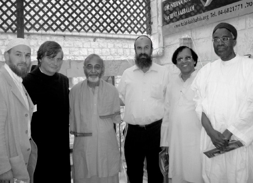

Packaging Chassidus and Moshiach for the Tourist Trade
The Center for Kabbala, which is run by R’ Eyal Reiss, is not your typical Chabad house. It spreads the wellsprings of Chassidus, albeit in an atypical package. * Part 2 of 2

THE KABBALA CENTER REACHES THE ENTIRE WORLD
“All our programs began with amazing hashgacha pratis,” says R’ Eyal Reiss. “One day, we heard that the Tourist Ministry wanted to invest in tourism to Tzfas. Their goal had nothing to do with spirituality or Chassidus but was more like ‘Authentic Kabbala combined with Jewish Identity’ as they put it.
“Back then, I worked with tourists at Ascent where I developed a line of communication with Israelis in the form of ‘experiential weekends’ that were originally geared for Israeli tourists. I also ran a large gallery in the old city. That is where I discovered the enormous potential for spiritual tourism in Tzfas. In addition to that, it bothered me that there were so many people and types in Eretz Yisroel and the world at large that we were simply not reaching. In the research I conducted, I learned that many of the tourists who come to Eretz Yisroel do not visit Tzfas. Even those who do merely spend a few hours here, during which they visit galleries (not necessarily owned by religious people) and the old shuls. If they happen to encounter a Lubavitcher Chassid who puts t’fillin on with them, that is a big ‘dose’ of Judaism. For many years I thought about how to reach these potential markets.
“I took the l’chat’chilla aribber approach and put in a grant application to the Tourism Ministry. There were another 300 well-established organizations or individuals with strong resumes in the tourism field, who applied as well. The miracle happened, and out of all of them I got the center. I obtained non-profit status and got the funding from the Jewish Agency and the Tourism Ministry to open the International Kabbala Center of Tzfas.”
That first infusion went a long way. Since then, R’ Reiss works on fundraising from private donors, foundations and organizations.
“Today, Boruch Hashem, we are in the tourist center of Tzfas. There is hardly a person who comes to Tzfas who does not pass our street. And thanks to publicity, the number of visitors to our center is growing. The first year, we had about 8000 people. Last year, we reached 50,000 people!”
R’ Reiss gets a large share of the credit in Tzfas becoming a tourist city and a preferred tourist destination for Israelis and those from abroad. He travels to international tourist exhibitions where, alongside 50,000 people representing tourist sites around the world, he proudly represents Tzfas and the Kabbala Center as a place that combines the old and the new; a place that allows for the exploring of the principles of ancient kabbala with practical applications for a modern, happy, healthy life.
During a visit to London, he was asked for an interview by WTM (World Travel Media), a worldwide program about tourism. Thanks to the program, his center was publicized throughout the world. In fact, much of his publicity is through the groups of journalists or tour guides who visit the Kabbala Center and end up becoming advertisers of the place.
MOSLEMS LEARNING KABBALA
I am reminded of some newspaper clippings that were framed and hung on the wall of the office which I saw earlier. An article about a program on Al Jazeera, an independent Arab news channel, caught my attention. I asked R’ Reiss about it and he said, “They came here. When they saw positive articles about us in the papers and television channels in Europe, they decided to visit.”
It’s not only our “cousins” who visit the center in Tzfas, but non-Jews come from all over. On the steps I saw a couple who looked European, but when they began to talk, their English had a heavy Arab accent. It’s for a good reason that the center has “international” in its title. R’ Reiss knows how to handle any and all guests. When he invites these visitors to come in, they listen to a lecture about the Seven Noachide Laws as seen through the lens of kabbala.
At one point during the lecture, R’ Reiss takes out a paper with kabbalistic precepts written in Japanese. A group from Japan began learning kabbala and then came to Tzfas in order to enrich their knowledge.
When the Arabs left, I demanded to know why he welcomes them when they hate us. I asked him why he thought his lecture about the Sheva Mitzvos would change their attitude.
“First of all, it’s a horaa from the Rebbe to inform all gentiles with whom we come in contact about their mitzvos. Aside from them, we get religious groups like priests and other spiritual teachers, Christians, Moslems, Hindus, Shamans, etc. When a group comes with its leader, I have him read the Sheva Mitzvos. I can tell you that people are very receptive to mitzvos that the Creator of the world designated for them.
“From the reactions and feedback that I get from gentiles, and even from their leaders, I can assure you the Rambam’s prophetic words that all these religions pave the way for Moshiach are being realized today in the most astonishing way. Religions and what they have to offer don’t necessarily satisfy them. They want something meaningful, spiritual, eternal and true. When they hear that by fulfilling these mitzvos they are connecting to the Creator and the G-d of the Jews, who wrote the Torah, they are very impressed.”
CHASSIDIC ART
Noontime approaches. The morning group from Tel Aviv has returned to the center in order to visit the art gallery on the second floor, to hear a lecture on “Music in Judaism,” and to experience “spiritual meditation.” I join them.
In the gallery which is run by Mrs. Shuraki, a Lubavitcher from Tzfas, I finally understand why people are so interested and impressed by art. I always wondered why anyone would stand mesmerized in front of an abstract painting. There are the Chassidic pictures I grew up with like those of R’ Zalman Kleinman and R’ Hendel Lieberman, which mostly express moments of d’veikus and yearning, but to stand in front of a painting with some obscure message?
Mrs. Shuraki gives a presentation for these young people, who are themselves involved in art, about how her Chassidic faith is expressed in kabbalistic art. Entire lectures on kabbalistic topics, secrets of Chassidus and Hebrew letters are all expressed here in silent mode. It seems like a fascinating life journey, all in the confines of a small room. The young people with me are amazed by the powerful expression of abstract concepts.
Without a doubt, the most impressive painting is “Tzfas in the Circle of Life.” It depicts the old city in the shape of a ring (which represents continuity, the infinite, and of course, the connection to the Ein Sof) with each house and alleyway portraying another mitzva according to the Jewish calendar and Jewish life.
Many people buy art here, including the Tzfas drawing. I try to imagine how a picture like this will affect someone, how he will remember the spiritual experiences he had here and how this work of art will serve as a reminder of the fulfillment of Torah and mitzvos.
The center gets many emails with feedback. For example, R’ Levi Cunin, shliach in Malibu, California wrote, “Thanks for hosting D.T., our mekurav. I am trying to understand what happened to him during the course of his visit to Tzfas. He returned with such enthusiasm and began putting on t’fillin, after many years of my trying to convince him to do so and his refusing.”
Or the story of Christina, a young Jew from London, who sent an invitation to her wedding – she wrote, “I assume that due to the volume of people who pass through your center, you won’t remember my name, but my story will remind you of whom I am. I visited a year and a half ago with my non-Jewish friend and we attended the kabbala workshop. Afterward, we spoke with you. You spoke to my friend about the mitzvos that non-Jews need to do. As for me, who was engaged to marry a non-Jew, you said in the clearest and most persuasive manner that marriage is permitted and appropriate only with a Jew.
“What you said made a great impression on me. Upon my return to London, I dropped my boyfriend (with the help of my gentile girlfriend!) and I am happy to tell you that I am marrying James, a Jewish policeman from London. I would be so happy if you could attend the wedding …”
R’ Eyal Reiss says that p’eula nimsheches (ongoing long-term activity) is the byword here, which is why every visitor is asked to leave their email address in the guest book so the center can keep in touch. Every week, the center sends out an electronic magazine with news and articles, to tens of thousands of email addresses.
One of the main ways to maintain contact is through weekends or weeklong workshops.
“When a tourist comes for a Thursday-Friday-Shabbos, we provide a special hosting experience in the physical sense along with an exciting program. It is relaxed and comfortable and over these few days our connection intensifies and the learning becomes deeper. An outreach effort that could be superficial and transient becomes deep and long term.”
R’ Reiss also travels four or five times a year to communities and Chabad houses abroad in order to maintain the connection with visitors. There he gives lectures on kabbala, Judaism, the secret of letters and relationships. He recently developed a new project called Chavrusa Online using Skype. It pairs up each tourist who joins the program with a rabbi or rebbetzin who will continue learning with them.
THE WOMEN’S ROLE
Mrs. Natalie Reiss comes in. She is Eyal’s wife and is also very active at the center. In the past, she trained as a cosmetologist, event designer and image consultant, and now uses the knowledge and tools she acquired for this shlichus. She lectures and gives workshops on the power of women and the beauty of Judaism and guides kallos who want a “kabbalistic wedding.” Like her husband, she maintains contact with mekuravos through lectures to women abroad.
She has some special stories of her own to share about her work:
“Last Sukkos, we had a family here from the United States that came to celebrate their daughter’s bas mitzva. Their daughter suffers from autism. For celebrations like these, we compose a special prayer for the girl. The girl stands alone facing the Aron Kodesh and pours out her heart to Hashem. These are very moving moments, even for families who are not religiously observant.
“As part of the program, I run a challa workshop with the bas mitzva girl, her friends and family. We braid challos and bake them and learn about the mitzva of separating challa dough. We did this with the autistic girl too who was in very bad shape. To everyone’s surprise, the girl said the entire bracha clearly, like a normal child! Her parents were very moved and attributed it to the mitzva she had done.”
Before Mrs. Reiss had to leave, I asked her about the bachelorette parties mentioned on the website among the many spiritual experiences and Chassidic workshops that the center offers.
Mrs. Reiss smiled and said, “Yes, it’s a gimmick which attracts many young people. They want something real, not the silliness that they have experienced previously. About half a year ago, a girl came to us. She is the daughter of a famous person in this country and she said she wanted a bachelorette party.
“We invited her and her friends and I gave them a fabulous preparation for the wedding about the significance of a Jewish wedding and the way to achieve shalom bayis. We did a workshop on women’s mitzvos. For the mitzva of challa, we began with sifting the flour and continued on to braiding the dough, to hafrashas challa and to washing and making a bracha on the challa. For Shabbos Candles, we braided splendid Shabbos candles and learned the halachos and segulos of lighting candles for Shabbos. Family Purity: we learned the halachos in an interesting format.”
DESCENDANTS OF NAZIS LISTEN TO CHASSIDIC NIGGUNIM
It was time for Chassidic meditation. We went up to the roof. The climb up was fantastic. I guess it’s only in Tzfas that you can go up from one building to another, going to the roof of the building next door, and feel as though this is the normal way of climbing to the roof. The panoramic view is magnificent, with the mountains of the Galil spread out to the horizon. It was sunset and the sky over Mount Miron was purple. Twilight in Tzfas is the best time for opening minds and hearts.
If I thought that I had been exposed earlier that day to the entire range of tourists, the group that sat down in a half circle now, broke all preconception. Here, right in front of me were – get this – descendants of Nazis!
Before you cringe, listen to their story. It seems that lately there is a new concept in Germany called Holocaust Trauma. This is the trauma felt by young Germans who discovered that they are descendants of Nazi murderers. Some fall into a depression and some inflict harm upon themselves, and some extreme cases have come to light.
Germany is at a loss about how to deal with this. Holistic healers have tried to help these suffering young people in various ways. One of these ways is a form of “penitence,” going to Israel, to visit places identified with Jewish continuity and to help Jews there.
That is how this group came to be on the roof of the Kabbala Center in Tzfas, in order to undergo “group therapy” with the Chassidic lecturer, R’ Amram Muell. This is the second time that a group like this has come to the center.
Obviously, R’ Muell does not encourage them to harm themselves. He quotes statements like, “Not for nothing did He create it [the world] but to settle it” and “His mercy is on all His works” and “My handiwork is drowning in the sea and you are saying shira?” He explains that the role Hashem gave every created being is to make this a better world, a world of peace. This is his introduction to the Sheva Mitzvos B’nei Noach. The group is with him and they nod in agreement.
There is also the music workshop in which R’ Muell describes how music is an inseparable part of our lives, from being put on hold when making a call to shopping in the mall and taking an elevator. He categorizes music and differentiates between music of the soul which arouses the soul and is cleansing and purifying, and music that is nothing more than superficial noise.
During the lecture (which is tailored to fit young people who are just beginning to show an interest and even for yeshiva boys), R’ Muell makes good use of humor which his audience enjoys.
Then comes the high point: meditation! R’ Muell asks the crowd to close their eyes and to listen to music with their souls. No, it is not necessary to sit on the floor and cross your legs. I close my eyes too and listen to Chassidic niggunim of d’veikus. For a long while I forget where I am and why. The fact that I am sitting with grandchildren of SS officers has flown out of my head. I have the freedom to get swept up in the music and it the atmosphere brings back memories of the time when we sang niggunim in yeshiva towards the end of Shabbos.
I feel electricity in the air. I remind myself that I am there as a journalist and open my eyes. To my surprise, the crowd is very moved, with some in tears. Apparently, niggunim can also move non-Jews.
Later on, R’ Muell explains his approach to me. “We have a shlichus from the Rebbe to prepare the world to greet Moshiach. Non-Jews are part of the world that the Rebbe is talking about.”
I ask him about the usage of terms like “meditation.” R’ Muell says, “What is meditation? It is actually the translation of the word hisbonenus, one of the foundations of Chabad Chassidus. Unfortunately, some people have taken the concept far away, even to idol worship, but everything in the world that is not defined as being from the three impure klipos has a mission to be used to better the world. Any tool that can help a shliach spread the wellsprings of Chassidus needs to be used, in a permissible way. The world today needs all these concepts; our role is to infuse true Chassidic content into these fads.”
TZFAS IS READY FOR MOSHIACH
A full moon illuminates the rooftop. The Chassidic meditation concludes with the ultimate in polar opposites; the singing of “Am Yisroel Chai” by the children of Nazis. I can hear the singing and dancing even as I exit the center and walk down the street. People passing by are used to hearing singing from the roof overhead.
“Every Friday night they daven and have a Shabbos meal there,” said one of the neighbors. Even he, who is used to the voices emanating from the Kabbala Center, cannot imagine what just took place there.
R’ Reiss will remain there for many more hours. There are groups who come for nighttime tours. During the busy seasons, when they have Chanuka tours or Slichos tours, there are dozens of groups every night.
As I left, R’ Reiss was getting ready for a trip with a group of lawyers to Amuka. They weren’t only going to pray at the gravesite of Rabbi Yonasan ben Uziel; they were going to have a workshop. I trust that R’ Reiss will teach them, in brief, the Kuntres HaHishtachus of the Mitteler Rebbe.
I see an electric pole with a sticker “Tzfas is Ready for Moshiach” with a picture of the Rebbe on it. After a day packed with Chassidus and mivtzaim, this expression takes on a deeper significance. I picture the Rebbe MH”M sitting in “Moshiach’s chamber” and responding to the Baal Shem Tov that he will come when the wellsprings of Chassidus, whose early roots began here in this city, will spread forth to the most distant places, to those tourists who come to experience “meditation” and to attend a workshop on personal power; likewise, l’havdil, to those goyim who come from all over the “chutza” to hear about kabbala and Chassidus.
Menachem Mendel Arad. "Packaging Chassidus and Moshiach for the Tourist Trade." Beis Moshiach, no. 864 (January 11, 2013).